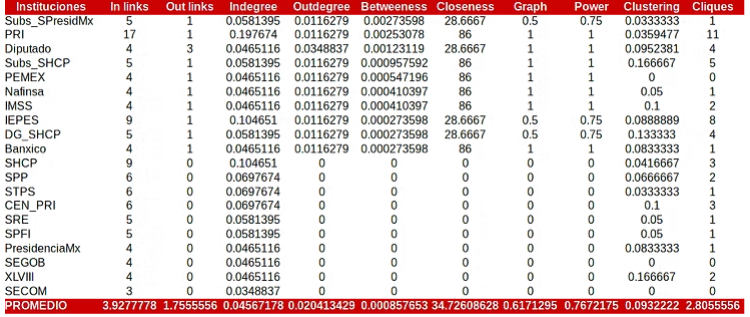
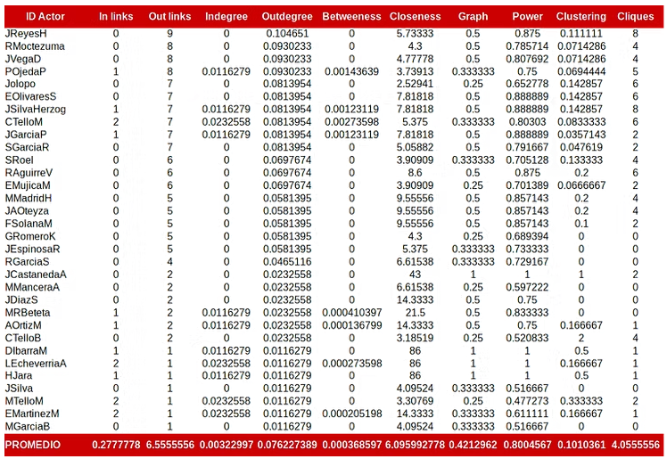
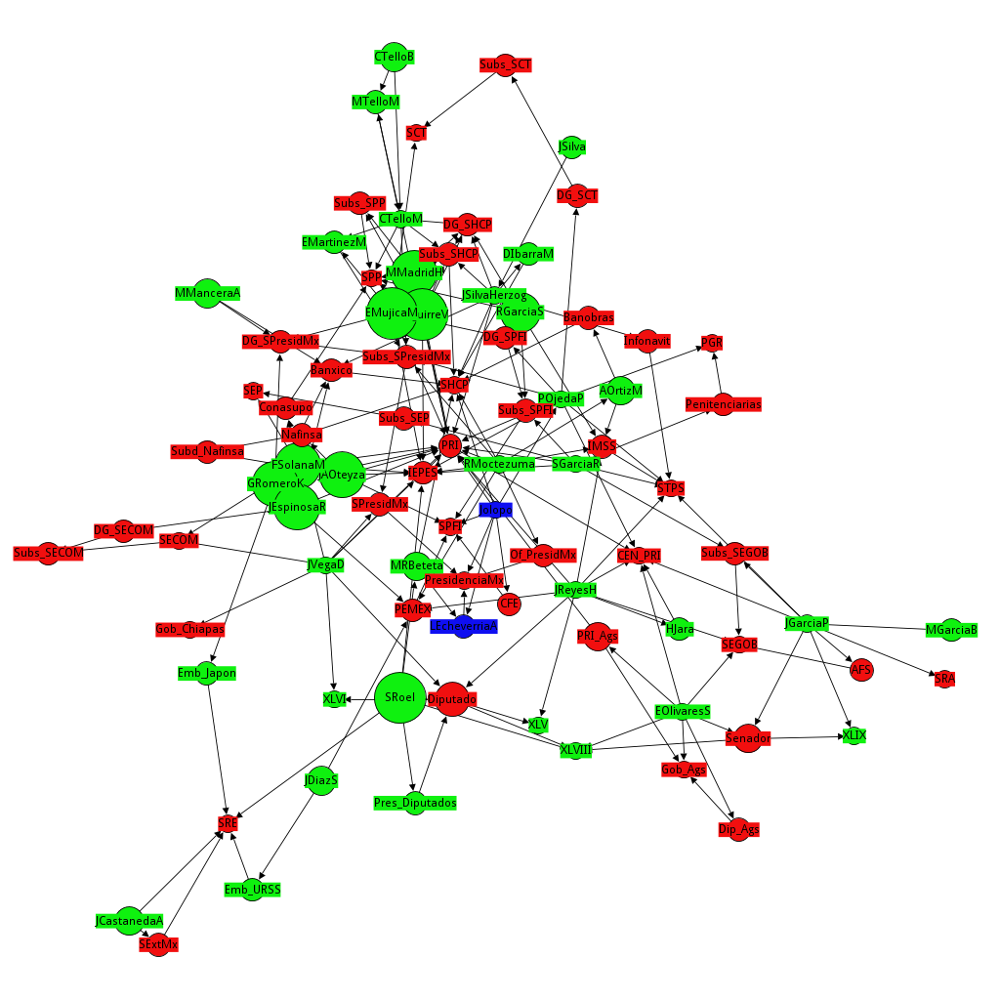
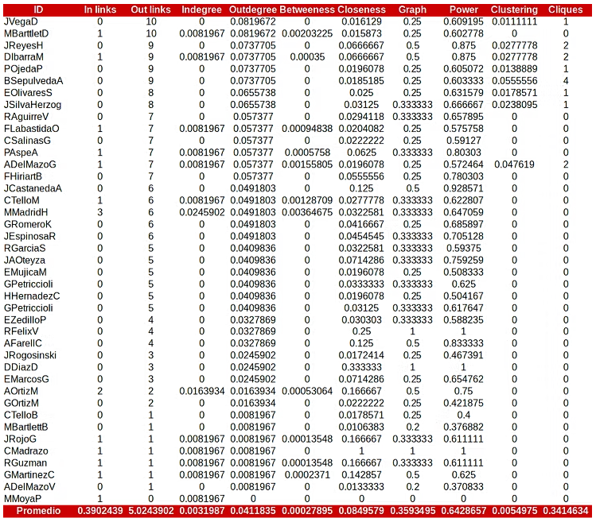
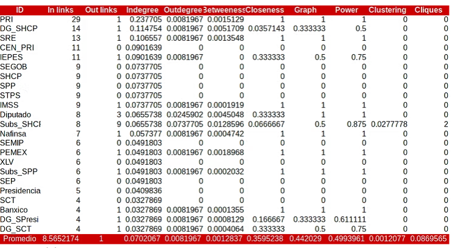
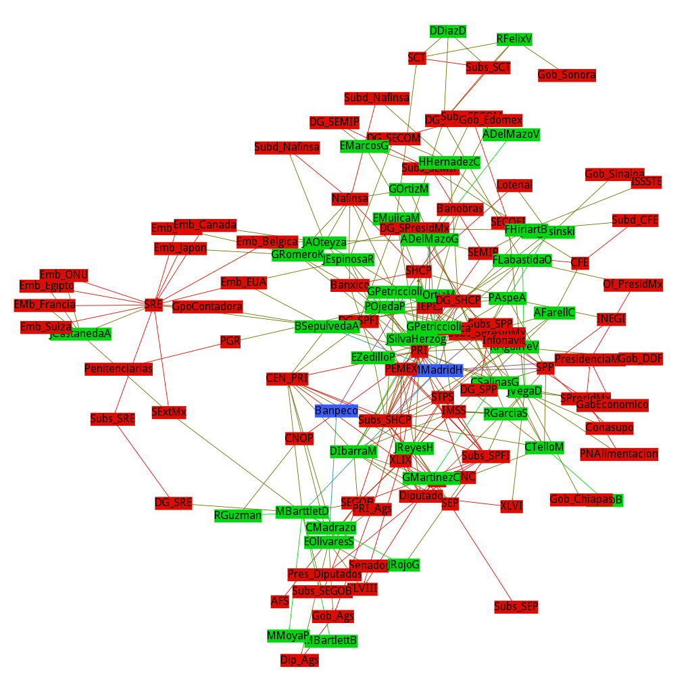

Los gabinetes que manejaron la crisis económica de 1982 en México
Los gabinetes económicos son equipos formados por los secretarios de Estado que se encargan de diseñar, aplicar y evaluar políticas económicas a través de las instituciones del Estado. Los secretarios de Estado son seleccionados por el presidente en acuerdo con las organizaciones políticas que lo apoyaron en su candidatura, como partidos políticos, organizaciones civiles, empresarios y otros grupos de interés.
Los gabinetes económicos representan la correlación de las fuerzas políticas que intercambian apoyos con el presidente.
Los gabinetes económicos presidenciales (GEP) incluyen a los titulares de ciertas secretarías y sus subsecretarías, así como a entidades paraestatales fundamentales para el sistema fiscal. La selección de secretarios de Estado ha variado en función de la orientación económica impulsada por las redes de dominación incorporadas a las políticas del ejecutivo federal. Desde la teoría económica neoclásica, se sostuvieron las políticas de reestructuración del Estado desarrollista, que orientó la política económica hacia el fortalecimiento del mercado interno mediante el apoyo a la burguesía nacional(Sheinbaum y Cimet 1976).
1 La red del gabinete económico de José López Portillo
La crisis de 1982 provocó una reconfiguración en la selección de secretarios y subsecretarios de Estado para controlar desde el aparato burocrático la reorientación de la política económica favorable al fortalecimiento de la oligarquía económica nacional1. Se parte del supuesto de que la instauración del neoliberalismo en México no sólo obedeció únicamente por variables exógenas, sino como consecuencia de una reacción de las redes de dominación política y económica para lo cual debieron articularse paulatinamente en torno a un programa de reestructuración del Estado capitalista dependiente mexicano.
El Estado neoliberal se refiere a la instauración de un modelo de Estado que orienta su economía política en función de las necesidades del mercado internacional, de tal manera que el sistema productivo y de acumulación se orientan en el mercado externo. Ideológicamente se sustenta en los presupuestos teóricos de la llamada Escuela de Viena, liderada por los economistas Otto Von Misses, Friederich Hayek y Milton Friedman, quienes proponen el retorno de la economía neoclásica basado en las políticas monetaristas y de des regulación de las actividades económicas que, debido a la autoorganización, encontrarían formas equilibradas de producción y ganancias que serían subsanadas por la competencia de los mercados. Esta doctrina económica fue desechada después de la Primera Guerra Mundial al resultar poco eficiente para las economías europeas, las cuales prefirieron la orientación del Estado de Bienestar como sistema de producción basado en el capitalismo central. Pero desde mediados de la década de los setentas la doctrina neoclásica retomó importancia en las universidades elitistas de Estados Unidos y Gran Bretaña al grado de convertirse en escuelas dominantes en el pensamiento aplicado de la economía política. Los partidos conservadores en esos países retomaron las medidas sugeridas por la teoría neoclásica e impulsaron transformaciones estructurales de sus respectivos Estados, los cuales fueron copiados y en algunos casos instaurados como garantías de pago ante contextos de crisis económicas severas(Híjar 1998).
Distribución de grados de centralidad de las 15 principales instituciones del GEP José López Portillo.

Fuente: (Bustos Nájera 2016)De los actores mencionados, cuatro son hijos de altos funcionarios de gabinetes anteriores: José López Portillo2, Enrique Olivares Santana, Javier García Paniagua, Jesús Silva Herzog Flores y Carlos Tello Macías. La edad de los actores va desde los 34 a los 57 años al inicio del gobierno de López Portillo, y de 40 a 63 años al finalizar, lo que da un promedio de edad de 44.22 años. De ellos, tres son parte de la red de burócratas, uno es parte de la red de políticos-empresarios, 17 son tecnócratas y 15 son técnicos. Al analizar los grados de centralidad por actor, los secretarios Jesús Reyes Heroles, Rodolfo Moctezuma, Jorge de la Vega, Pedro Ojeda y José López Portillo, Enrique Olivares, Jesús Silva Herzog, Carlos Tello, Javier García y Sergio García registran el mayor grado de referencia externa (outdegree). Por otro lado, Carlos Tello, Pedro Ojeda, Jesús Silva Herzog, Javier García, M Beteta, Enrique Martínez y A. Ortiz registraron los mayores grados de intermediación (betweeness), lo que indica que estos actores podrían conectar diferentes grupos dentro del aparato burocrático. Finalmente, los actores que tienen más poder y control de redes subordinadas son Jorge Castañeda, David Ibarra y Jesús Silva Herzog con un Índice de Poder (power degree) igual a 1.
Distribución de grados de centralidad por actor. GEP José López Portillo.

Fuente: (Bustos Nájera 2016)
Red del capital política del gabinete económico de José López Portillo

2 La red del gabinete económico del Miguel de la Madrid
La red de capital político del gabinete económico de Miguel de la Madrid, que consta de 123 nodos, incluyendo 46 actores y 91 instituciones. Cinco de estos actores son hijos de altos funcionarios de gabinetes anteriores, como Manuel Bartlett3, Fernando Elías Calles, Jesús Silva Herzog Flores, Carlos Salinas y Alfredo del Mazo González4. El rango de edad oscila entre los 31 y 61 años al inicio del gobierno, y entre los 37 y 67 años al final, con una edad media menor que el gabinete anterior, de 35,5 años. Las principales instituciones vinculadas a la experiencia de dirección política de este gabinete se muestran en la tabla 6, donde el PRI es la principal institución de referencia con 29 vínculos, seguida por la Dirección General de la SHCP con 14, la SRE con 13, el CEN del PRI y el IEPES con 11, la SEGOB, la SHCP, la SPP, la STPS y el IMSS con 9 vínculos5.
Los secretarios Jorge de la Vega, Manuel Bartlett, Jesús Reyes Heroles, Pedro Ojeda, Bernardo Sepúlveda, Enrique Olivares y Jesús Silva Herzog registran el mayor grado de referencia externa (outdegree), mientras que Miguel de la Madrid, Manuel Bartlett, Alfredo del Mazo, Carlos Tello, Francisco Labastida, Pedro Aspe, Antonio Ortiz Martínez y David Ibarra registran los mayores grados de intermediación (betweeness), lo que sugiere que estos actores tienen la capacidad de conectar diferentes grupos dentro del aparato burocrático.
Por otro lado, los actores que poseen mayores grados de poder, es decir, controlan redes subordinadas, son Rodolfo Félix, David Díaz, Carlos Madrazo, Jorge Castañeda, David Ibarra, Jesús Reyes Heroles, Arsenio Farell, Pedro Aspe, Fernando Hiriart, José Antonio Oteyza y Antonio Ortiz. En este sentido, estos últimos actores son quienes estructuralmente cuentan con el mayor capital político en comparación con el resto del gabinete.
Distribución de grados de centralidad por actor. Gabinete económico de Miguel de la Madrid.

Fuente: (Bustos Nájera 2016)
La distribución de los grados de centralidad de las instituciones muestran la existencia de una concentración de vínculos entre un grupo reducido de instituciones. Como puede observarse en la tabla 5, tan sólo el PRI, la Dirección General de Hacienda, la SRE, el CEN del PRI y el IEPES representan el 28% del total de vínculos de entrada (In-links), es decir, 78 de un total de 276 vínculos. Sin embargo, sólo tres instituciones, la Subsecretaría de Hacienda, la subsecretaría de Patrimonio y fomento Industrial (SPFI) y la legislatura XLIX registraron grados de agrupamiento (0.0277 cada una), lo que es de llamar la atención ya que el resto de instituciones no posee grado de agrupamiento, incluida la Secretaría de Programación y Presupuesto, institución que aglutinó al gabinete económico de De la Madrid.
Distribución de grados de centralidad por institución. Fuente: Elaboración propia. Medidas globales. a. Nodos: 123, Aristas: 292; b. Grado promedio: 2.379; c. Diámetro: 5; d. Modularidad: 0.507, comunidades: 9; Grado promedio de agrupamiento: 0.111; Longitud media: 1.996. Modelo de distribución de la red: Fruchterman-Reingold. Fuente: Elaboración propia. Medidas globales. a. Nodos: 123, Aristas: 292; b. Grado promedio: 2.379; c. Diámetro: 5; d. Modularidad: 0.507, comunidades: 9; Grado promedio de agrupamiento: 0.111; Longitud media: 1.996. Modelo de distribución de la red: Fruchterman-Reingold.

Fuente: (Bustos Nájera 2016)
No obstante, al intentar explicar el grado de intermediación de las instituciones se encontró que no existe asociación estadísticamente significativa con el grado de cercanía (R=0.01), en cambio sí la hay en cuanto al grado de agrupamiento (R=0.38). Sin embargo, como se señaló anteriormente sólo tres instituciones registran grado de agrupamiento. Esto indica el grado de centralidad de las instituciones, lo que muestra un patrón cerrado de vinculación entre los actores con las instituciones del capital político.
Red del gabinete económico de Miguel de la Madrid

Finalmente, la estructura de la red muestra una red centralizada conformada por 14 clusters cuyo grado de poder se concentra entre un grupo cerrado de nodos. Es una red compuesta por 123 nodos y 247 aristas, que representan instituciones (gris), secretarios de Estado (amarillo) y el presidente (rojo) muestran una red de tipo mundo pequeño con un grado medio promedio de 2.37 paths, pero un diámetro de la red de 2.39 geodésicas, es decir, una red con mayores grados de cercanía con respecto a la de su antecesor que fue de 4 geodésicas. Sin embargo, conserva valores similares de modularidad (0.521) y del número de comunidades (9 comunidades).
Esta red no muestra un caso de centralidad basada en el presidente, sino concentrada en un grupo reducido de secretarios, particularmente de Gobernación y Hacienda, quienes políticamente poseían el mayor grado de capital político del gabinete económico.
la centralidad del PRI como institución política socializante es evidente.
La distribución de los enlaces basados en el grado de centralidad de muestra en el centro a este partido, que a pesar de haber perdido buena parte de su dominio en las elecciones de 1982, para el reclutamiento de secretarios se mantiene como un componente gigante en el cual se articulan gran parte del capital político de los secretarios de Estado, por encima del Presidente, la Secretaría de Hacienda, PEMEX y el IEPES. A su vez se aprecia que los secretarios de Relaciones Exteriores y Gobernación se asocian en comunidades diferenciadas con respecto al resto de secretarios, patrón que sugiere que su selección se filtra por caminos que no se encuentran dentro del patrón de vinculación del resto de ministros del gabinete económico presidencial.
Referencias
Notas
Tales como la renegociación de la deuda con la banca extranjera quienes solicitan el cambio de la política económica, fiscal, laboral y de gobernación del Estado mexicano como garantía de pagos sustentados en el Consenso de Washington, signadas por el Fondo Monetario Internacional (FMI), Banco Mundial (BM) y el Departamento del Tesoro de Estados Unidos. Williamson, J., “Diez áreas de políticas de Reforma”, versión digital en herzog.economía.unam.mx/profesores/eliezer/jonhw.pdf↩︎
José López Portillo y Pacheco es nieto de José López Portillo y Rojas quien fue fue diputado, senador y gobernador de Jalisco durante el gobierno de Porfirio Díaz (1878-1910), y posteriormente Ministro de Relaciones Exteriores durante el gobierno de Victoriano Huerta. Enrique Olivares es hijo de Héctor Hugo Olivares, quien fuera tres veces diputado y dos veces senador por el PRI. Javier García Paniagua es hijo de Marcelino García Barragan, gobernador de Jalisco entre 1943 y 1947 y posteriormente secretario de Defensa Nacional bajo el gobierno de Gustavo Díaz Ordaz. Jesús Silva-Herzog Flores es hijo de Jesús Silva Herzog, economista, sociólogo y abogado cercano al presidente Lázaro Cárdenas y uno de los autores del informe utilizado por Cárdenas para la expropiación petrolera. Posteriormente fue el primer director de Distribución de la recién creada empresa nacional Petróleos Mexicanos. Fue también el fundador de la Escuela Nacional de Economía de la UNAM. Carlos Tello Macías, nacido en Ginebra Suiza cuando su padre Carlos Tello fue embajador en aquel país, y quien posteriormente se convertiría en secretario de Relaciones Exteriores durante los gobiernos de Miguel Alemán Valdez y Adolfo López Mateos. Posteriormente sería senador por el estado de Zacatecas. Carlos Tello es hermano de Manuel Tello Macías, quien se desempeñaría como titular de Relaciones Exteriores durante el gobierno de Carlos Salinas. En su árbol genealógico también figura ser tataranieto de Porfirio Díaz.↩︎
Manuel Bartlett es hijo de Manuel Bartlett Bautista, Gobernador de Tabasco 1953-55, ministro de la Suprema Corte y cercano a Miguel Alemán. Fernando Elías Calles es nieto del expresidente Plutarco Elías Calles.Carlos Salinas hijo de Raul Salinas Lozano quien fuera secretario del Trabajo de Lopez Mateos. Alfredo del Mazo González es hijo de Alfredo Del Mazo Velez, gobernador de Edomex cercano a Miguel Alemán Valdés. Su hijo alfredo del Mazo Maza quien ha sido diputado local, presidente municipal y diputado federal por el municipio mexiquense de Huixquilucan, además de director general de Banobras durante el gobierno de Peña Nieto.↩︎
Esos cinco casos son Enrique Olivares Santana, Santiago Roel, Sergio García Ramírez. Por su parte, Ricardo García Sainz fue Presidente de la Asociación Nacional de Importadores y Exportadores de la RM, Vicepresidente y Presidente de la CONCAMIN, 1962, realiza la primer compra de una empresa pública con la Consolidada de Cobre. En tanto, José López Portillo, Jorge Castañeda Álvarez, Julio Rodolfo Moctezuma Cid, David Ibarra Muñoz, Jesús Silva Herzog Flores, Miguel de la Madrid, Carlos Tello, Pedro Aspe Armella, Ernesto Zedillo, Francisco Labastida Ochoa, Fernando Hiriart, Emilio Mujica y Pedro Ojeda.↩︎
Es importante resaltar que algunas secretarías cambiaron de nombres y funciones en cada gobierno. Tal es el caso de la SPP que anteriormente se llamaba Secretaría de la Presidencia, cuyo objetivo inicial fue reducir el peso de la SEGOB en el reparto del presupuesto público y al mismo tiempo dirigir el gasto con fines económicos. La SPP desapareció durante el gobierno de Carlos Salinas (1989-94) y se transformó en Secretaría de Desarrollo Social (SEDESOL), nombre y funciones que permanecen hasta el gobierno actual. La SPFI que hasta el gobierno de Luis Echeverría (1970-76) fue denominada Secretaria del Patrimonio Nacional (SEPANAL) se transformó con los mismos objetivos que la SPP. Se fusionó con la SECOM durante el gobierno de Miguel de la Madrid en Secretaría de Comercio y Fomento Industrial (SECOFI).↩︎